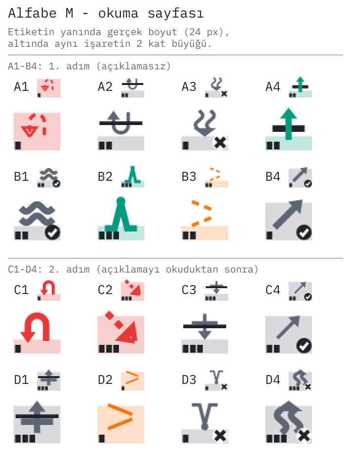
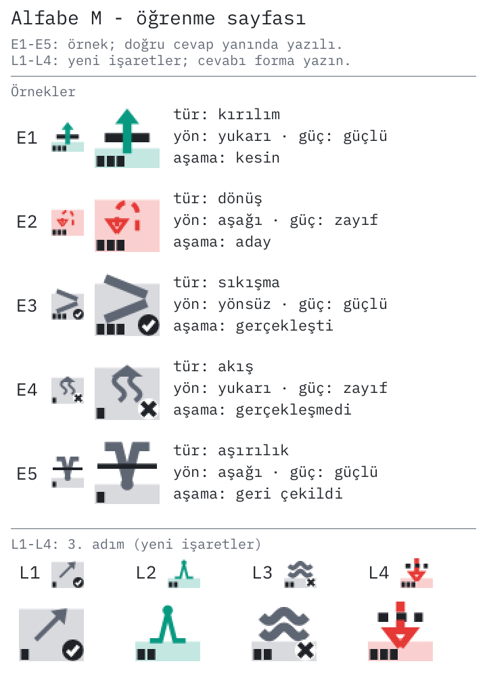
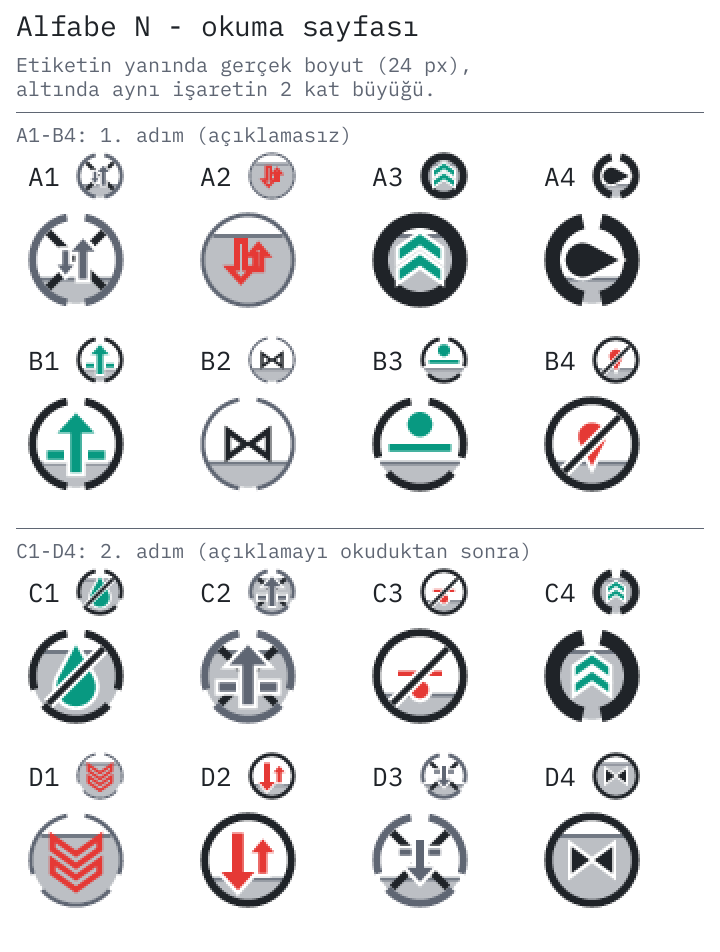
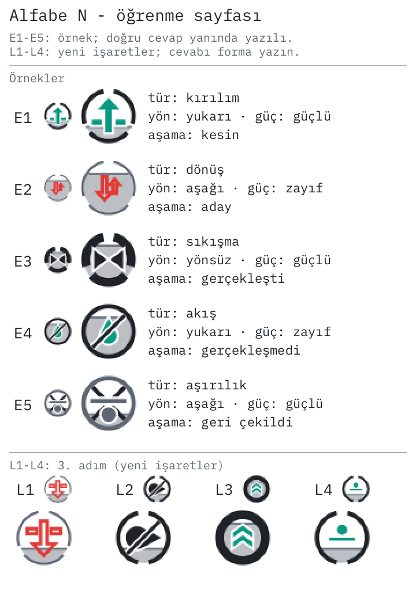

Bu kitapçıkta bir piyasa "anlam alfabesi"nin işaretleri var. Her küçük işaret, bir hisse grafiği hakkında bir gözlemi anlatır. Bu bir sınav değil; ölçülen sizin değil, işaretlerin anlaşılırlığı. Emin olmadığınızda tahmin edin.
Sayfaları görevli söyleyince çevirin. Önceki bir adıma dönüp cevap değiştirmeyin.
Bu tablo yalnız sözcüklerin anlamını verir; işaretlerin nasıl çizildiğini söylemez. Kodlar formda daire içine alacağınız kısaltmalardır.
| Tür (işaretin anlamı) | |
|---|---|
| Devam (DV) | Hareket sürüyor. |
| Dönüş (DN) | Hareket tersine dönüyor olabilir. |
| Kırılım (KR) | Bir sınır aşıldı. |
| Sıkışma (SK) | Hareket daralıyor; yön belirsiz. |
| Aşırılık (AŞ) | Olağandışı uzama (aşırı alım / aşırı satım). |
| Akış (AK) | Fiyattan bağımsız para girişi ya da çıkışı. |
| Yön | |
| ↑ / ↓ / — | Yukarı, aşağı ya da yönsüz (belirsiz). |
| Güç | |
| Z / G | Zayıf ya da güçlü. |
| Aşama (gözlemin yaşamı) | |
| Aday (AD) | Bar daha kapanmadan görüldü; kaybolabilir. |
| Kesin (KE) | Bar kapandı, gözlem kesinleşti; hâlâ açık. |
| Gerçekleşti (GE) | Kapandı: beklenen oldu. |
| Gerçekleşmedi (GM) | Kapandı: beklenen olmadı. |
| Geri çekildi (GÇ) | Kapandı: dayandığı veri hatalı çıktı, geri alındı. |
Önce etiketin yanındaki küçük (gerçek boyutlu) işarete bakın; altındaki aynı işaretin büyütülmüşüdür.

Alfabe M'nin kendi kısa açıklaması:

Önce etiketin yanındaki küçük (gerçek boyutlu) işarete bakın; altındaki aynı işaretin büyütülmüşüdür.

Alfabe N'nin kendi kısa açıklaması:

S1 AKBNK 30 bar önce 20,86'daki desteği aşağı kırdı (kapanış 20,58): aşağı kırılım. Bugün ters yönde bir sinyal geldi; görünüm zayıfladı. Hâlâ geçerli olup olmadığı bilinmiyor. Karnesi henüz az örnekli: 8 seferin 2'sinde tuttu.
S2 GARAN'da bant genişliği 5 bardır eşiğin (0,06) altında; şu an 0,0588. Sıkışma (yön belirsiz) sürüyor. Beklenen sonuç bugün gerçekleşti. Karnesi henüz az örnekli: 8 seferin 5'inde tuttu.
S3 THYAO'da RSI 3 bar önce 70'in üstüne çıktı, bugün yeniden altına indi; şu an 55, artık 70'in üstünde değil. Aşırı alım sona erdi. Geçmişte bu sinyal 140 seferin 87'sinde beklendiği gibi sonuçlandı.
S4 EREGL 3 bar içinde uzun ortalamanın (255,56) üstünde kapanırsa yükseliş eğilimi teyit olur. Bugün ters yönde bir sinyal geldi; görünüm zayıfladı. Koşul hâlâ açık. Karnesi henüz az örnekli: 8 seferin 4'ünde tuttu.
S5 PGSUS'ta RSI bugün 30'un altına indi (28,8): aşırı satım. Bugün hacim de teyit etti; 2 bağımsız kanıt ailesi destekliyor. Hâlâ geçerli olup olmadığı bilinmiyor. Geçmişte bu sinyal 140 seferin 99'unda beklendiği gibi sonuçlandı.
S6 BIMAS'ta kurumsal net satış yaklaşık bir hafta önce her zamankinden güçlü hâle geldi; artık her zamankinden güçlü değil. Para çıkışı sona erdi. Geçmişte bu tür sinyal çoğunlukla beklendiği gibi sonuçlandı. Sunucu doğruladı; rakamlar kurumsal akış lisansı gerektiriyor.
S7 TUPRS 3 bar içinde dönüş noktasının (228,51) üstünde kapanırsa yukarı dönüş teyit olur. Beklentinin 30 barlık ömrü bugün sonuçsuz doldu; artık geçerli değil. Geçmişte bu sinyal 140 seferin 49'unda beklendiği gibi sonuçlandı.
"Bar": grafikteki bir mum, yani bir zaman dilimi (ör. bir gün).